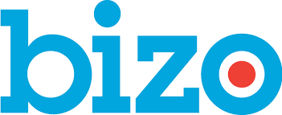

Early-stage
Seed to Series A
Companies building their GTM foundation. The story has often been carried by the founder; we crystalize it, and bring the structure and rigor to make it scalable.
B2B GTM Partner
We help B2B software companies sharpen their positioning, clarify their story, and activate it across the moments where buyers meet your brand and sales teams need it most.
Our point of view
When the story is unclear, every downstream motion works harder than it should. But when the message is sharp at the source, your website, campaigns, sales conversations, and content all start pulling in the same direction.
Operator + consulting roles at

How we help
Our work starts with the strategic core: ICP, category positioning, narrative, value proposition, differentiation. From there, we extend the message into the assets, campaigns, and sales tools that help teams show up effectively and consistently in market.
AI is embedded in how we work. We use AI agents and structured workflows across every phase of the engagement, letting us deliver senior-led depth at the pace you need to move.
What we do
Most messaging work ends with a deck. Ours doesn’t. Each phase builds on the last, so the story stays sharp from blueprint to buyer.
A sharp, differentiated narrative on the problems you solve, who you help, and why they choose you. From discovery to a working messaging blueprint in days, not weeks.
Translating the source of truth into the buyer-facing moments that matter most — website, core collateral, sales narrative, explainer content, and more.
Putting the narrative in the hands of the sales team. The pitch deck, elevator pitch, SDR outreach, objection handling, and talk tracks that make the story usable.
A creative concept that carries the message into market, with the campaign asset starter kit needed to bring it to life.
Who we work with
Seed to Series A
Companies building their GTM foundation. The story has often been carried by the founder; we crystalize it, and bring the structure and rigor to make it scalable.
Series A to Series C
Companies reaching a GTM inflection point. The product has evolved, and you’ve learned a lot about the market, but the messaging has not kept pace.
Any stage
Companies navigating a new category play, major repositioning, product expansion, or shift in go-to-market strategy.
How we engage
About
I’ve spent two decades building categories and repeatable B2B marketing engines across venture-backed and later-stage software companies.
Three successful exits as CMO. My experience spans CMO and marketing leadership roles at LinkedIn, Clari, Bizo, ClearGov, Crunchtime, Zenput, and SuccessFactors. I’ve built teams from first hires to acquisition, and helped scale GTM motions across SMB, mid-market, and enterprise segments.
The common thread across that work: clear ICP focus, rigorous messaging, customer-centered storytelling, performance discipline, and tight partnership with sales and product.
I bring that same operating experience to every client engagement — helping companies find the right words, build the right foundation, and put the message in motion.
When an engagement calls for specialized capacity, I bring in a tight network of trusted operators — across AI automation, design, video, MOPs, program execution and specific GTM domains.
In their words
Dave first came in as a consultant, then joined Zenput as CMO. Over 4 years he built out marketing, helped scale our GTM, and established the company as the leader in the category he helped us create — all the way through acquisition. When I launched Fencer this year, Dave was the first call I made.
I’ve worked with Dave at multiple companies, and he is — without doubt — the best marketing executive I’ve ever worked with. A master at messaging. A prodigy at product marketing. A genius at lead generation. If you get the chance to work with him, don’t miss it.
The marketing engine and team Dave built at Bizo was instrumental to the company’s success. Having worked with him almost 7 years across Bizo and LinkedIn — as a marketing leader and practitioner — he’s among the very best.
Let’s talk
A working conversation about what’s working and what’s not, and the highest-leverage areas to focus.
Every consultation includes
A complimentary AI-Powered Messaging Diagnostic
An outside-in read on where your message is sharp, where it’s slipping, and the highest-leverage place to focus.